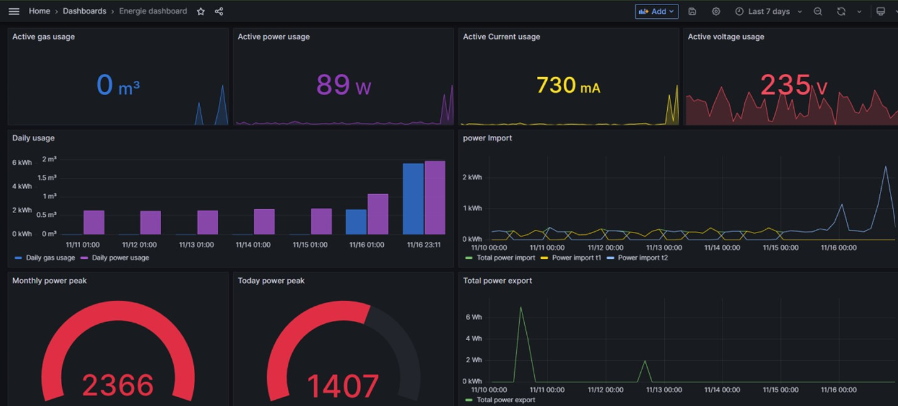

Dashboard
Voor het dashboardproject werkte ik met energiedata die via een API beschikbaar werd gesteld. Deze data was afkomstig van een woning en bevatte een grote hoeveelheid meetgegevens over energieverbruik.
De opdracht bestond erin om deze gegevens te verwerken en te visualiseren in een overzichtelijk dashboard. We kregen hierbij veel vrijheid in de aanpak, met als doel om te leren werken met Node‑RED voor het verwerken van de data en Grafana voor de visualisatie.
Ik heb op basis van deze gegevens een dashboard uitgewerkt dat de belangrijkste informatie op een duidelijke manier weergeeft. Daarbij focuste ik op overzichtelijkheid en leesbaarheid, zodat de gebruiker snel inzicht krijgt in het energieverbruik.